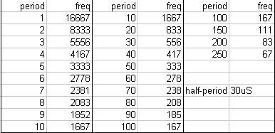
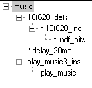
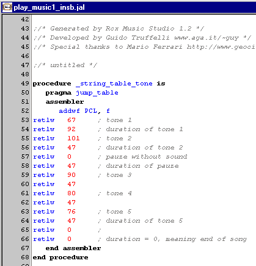
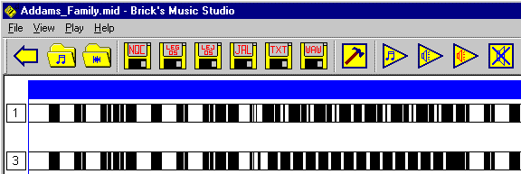
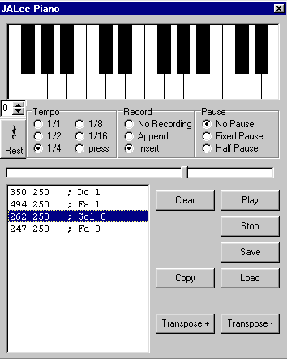

April 2002
Sound & Music
Introduction
Inspired by the "one litle violin" of Vasile (see here) and knowing the cool program Brick's Music Studio by Guido Truffelli, combined with my own wish to make a speaking robot, I decided to investigate the possibilities of PIC's producing sounds.
From some experiences with the Mindstorms RCX, I know that speech is quiet difficult and as far as I know impossible with the RCX. So speech, although still a wish of me, is not the current goal of this project, but just making interesting sounds from wav-, midi-files and maybe ringtones.
Basics
Basically there are two ways to make sound; playing fixed tones for a certain periods of time or generating the "exact" time-dependant waveform by some kind of DA-converter. For speech and musical instruments synthesis, often a third method is used: feeding pulses and white noise through time-varying filters. The latter method seems at first sight too complicated to fit into simple PICs.
Because every IO port of a PIC can deliver 25 mA of current and a piëzo-speaker is pure capacitive, you can connect a piëzo speaker directly between any IO-pin and ground (or positive supply if you like).
PIC limitations
There are few limitations which must be considered
- the available memory in PIC's is small
- memory tables larger then 256 bytes are difficult (maybe even impossible) to handle in JAL
- due to the above limition and due to the fact that JAL can handle only single bytes, the table values should be restricted to bytes (of 8 bits)
Timing
Both for the frequency and for the duration of a tone we've only 1 byte available, which means a dynamic range of *256.
The most important frequencies are to be expected at the low frequency range from 100 .. 3000 Hz. Translated to period times that means 10 msec downto 330 usec, or for half a period 165 usec to 5 msec.
So now we can define either period=1 to 165 usec or we can define period=255 to 5 msec. The first approach is not a good choice, because we loose too much resolution at the high frequencies, namely period=2 would mean 1500 Hz.
The most obvious choice to generate a constant frequency would be the use of the PWM (Puls Width Modulation) output.
But in the PIC I use most (16F628 @ 20 MHz) the lowest frequency the PWM can generate is about 1.2 kHz, because you can only use a maximum Timer2 prescaler of 16. The larger PIC's have larger pre-scalers.
So here we've to choose to use a timer that generates an interrupt and the constant frequency must be generated by the ISR (interrupt service routine). In this case you can use the Timer2, because interrupts are generated through a post-scaler.
|
I've chosen to use Timer0, because it's even available in the smallest PIC's.
Timer0 has a pre-scaler of 2,4,8,...256. Because we want to end up with a lowest frequency of 100 Hz, meaning a half period time of 5 msec, the ISR should be called at a maximum speed of 5ms / 250 = 20 usec. In that case a prescaler of 128, yields 128 * 0.2 us = 25.6 usec.
Due to the calling of an ISR (and therefore the saving of registers) there will be 1 or 2 usec added to this value, so we end up with a base period of 28 usec.
In the final design, I've chosen not to use the pre-scaler, but just preset the timer0 with a value of 128, which yields the same result.
On the right are the frequencies, for the case the half period would be 30 usec.
This seems to be according the goal. |
 |
The duration of the puls now also can be timed nicely by the ISR. Counting 255 interrupt request, would yield a time of about 250 * 30 us = 7 msec. So it's nice to define the duration step at 5 msec, in which case the maximum duration is 1.3 seconds, which seems to be far enough.
|
 |
Library structure
By including (a local copy) of PLAY_MUSIC3_INS.JAL in the main program all the sound and music functions are available.
Change the lookup tables in this file to your needs, set the IO-pin of your choice and the mode in which the music should be played and listen ...
For playing songs basically you can choose between 2 modes:
- full interrupt driven (so the PIC can do other things while playing music)
- full program driven (while playing music the PIC can't do anything else)
|
Procedures
|
Play_Song |
Plays a song (definied in the user lookup tables) from start to finish.
Depending on the mode (interruptdriven / program driven) the PIC can or can't do something during playing of the sound.
In the full interrupt driven mode, the main program can check if the song is still playing by checking if Song_Playing is still true.
In the full interrupt driven mode, a song can be stopped by calling Stop_Song. |
|
Play_Tune
(tune_number) |
Now the lookup table contains a number of (short) tunes, and calling this function will play the selected tune from start to finish.
(it's behaviour is exactly the same as play_song) |
|
Stop_Song |
Only useful if a song is playing in the full interrupt driven mode, to stop playing of the song. |
|
Play_Tone_and_Wait
(period, duration) |
Plays a fixed frequency for a fixed amount of time.
This routine will consume all processor power and will return if the tone is finished. |
|
Play_Tone
(period, duration) |
Plays a fixed frequency for a fixed amount of time.
This function is full interrupt driven and can checked for playing through Song_Playing and stopped by Stop_Song |
|
Lookup Tables
Here is an example of a lookup table.
the tables contains 2 values per tone
PERIOD
DURATION
Each table can be upto 254 bytes (= 127 frequency / duration combinations) long, but you can use as many tables as you like.
The routines automatically steps from one table to the next.
The PERIOD must be calculated with the next formula
constant = 1_000_000 / ( 60 * frequency[Hz] )
The DURATION must be calculated with the next formula
constant = duration[msec] / 5
if PERIOD=0 and DURATION<>0 then a silent pause is inserted
if DURATION=0 the end of the song is indicated
By these end-markers it's possible to store more songs or couplets into the tables (see the demo) |
 |
Generating Lookup Tables
The most simple way is to use the piano, described below.
A very promissing method is the method used by Guido Truffelli.
His program (Brick's Music Studio) is able to translate WAV and MDI files into RCX code,
but more interesting he was so kind to add (special for all Jalliens) also lookup tables for JAL. (The JAL extension is not yet released, some small changes have to be made).
Converting MIDI files goes very well . WAV files are more complicated and it will depend on the complexity of the wav-file what the result will be.
Some nice MIDI files to start with are Addams-family and The Flintsones
Ringtones should be nice source, but I'm not familiar with that.

|
Piano
The piano can used to edit and test songs, that can be translated to PIC lookup tables. The sound is generated through the PC speaker, to get a close ressemblance to a PIC-speaker.
JUST TRY IT: Put the Record mode in Append or Insert and start clicking the piano with your mouse, or use the keyboard, where the following key-mapping yields:
S D F H J Z X C V B N M By pressing the shift key, an octave higher is used.
Left below the piano keyboard, a spinbutton is placed which sets the base octave.
A rest can generated by the Rest-button, the spacebar or automatic through the setting of Pause selection.
PLAY, plays the song from the current cursor position
STOP, stops a song that is playing
SAVE,LOAD, stores/retrieve the song in a file.
TRANSPOSE + / - transposes the complete song 1 octave up or down
Arrow up / down, moves cursor though the songlist
Delete deletes the current line in the songlist
Insert toggels between Append / Insert mode
Finally COPY , converts the song to a PIC lookup table (period + duration as definied above) and places it on the clipboard, so you can paste (ctrl-V) it directly into a JAL file. |
 |
Some experimental thoughts
What are the possibilities if you'ld modulate both ends of a piezo speaker, with different signals ?
What would happen if you modulate the output with a high frequency, could it be possible to modulate the amplitude ?
Would it be possible to generate speech with a riddle of fixed frequencies (with very small time steps) ?
What about generating calculated sinusoidal signals and sending them to a PWM or a 1 bit DA converter.
Interesting Links
1 bit sound-generation
AD converter without a real converter
DaveDong
HAL PIC example
Microchip's "add music"
A free speech synthesis program Festival , MBROLA
Pitch modified speech US5987413 patent
Acoustic analysis of speech CSPeech
Converts Dutch or English words to their phonetic transcription TreeTalk
WAV and MIDI to RCX translation, Guy
my own quick and dirty including sources wav2rcx (315k)
{kind=link}